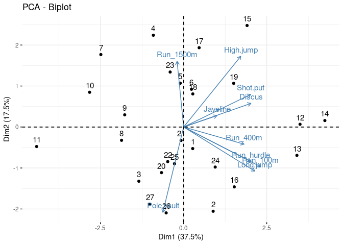

library(factoextra)
library(pheatmap)
library(tidyverse)
theme_set(theme_bw())We usually think of high-dimensional data as consisting of multiple measures on a group of samples:
Many scientists traditionally think of high-dimensional data as having parallel, continuous measures:
These may be complemented by a smaller number of “metadata” variables, which may be more diverse in type (count, categorical, etc.):
More and more datasets don’t follow this:
We study the rows (samples) using the columns (measures)
But we can also do the opposite!
print(names(decathlon2)) ## from factoextra pkg
## [1] "X100m" "Long.jump" "Shot.put" "High.jump"
## [5] "X400m" "X110m.hurdle" "Discus" "Pole.vault"
## [9] "Javeline" "X1500m" "Rank" "Points"
## [13] "Competition"dec_frame <- (decathlon2[1:10]
%>% as_tibble()
%>% rename_all(sub, pattern="^X", replacement="Run_")
%>% mutate_at(vars(contains('Run_')), ~(-1*.))
%>% rename_all(sub, pattern="110m.", replacement="")
%>% mutate_all(~c(drop(scale(.))))
)
Iris pairs plot (iris.R)
dec_mat <- as.matrix(dec_frame)
heatmap(dec_mat)heatmap(t(dec_mat))
pheatmap(cor(dec_mat), cell.width = 10, cell.height = 10)Better for visualizing groups of events
pheatmap(cor(t(dec_mat)), cell.width = 4, cell.height = 4)
Better for visualizing groups of events
A beautiful decomposition based on the idea that data points are points in a Euclidean space
We can think about the PCA as a decomposition (making observed points from idealized points)
Or we can think about it as minimizing distances:
pca_ath <- prcomp(dec_mat, scale=TRUE)
fviz_screeplot(pca_ath)fviz_pca_ind(pca_ath)
fviz_pca_var(pca_ath)fviz_pca_var(pca_ath, axes=c(2, 3))View scores and components:
fviz_pca_biplot(pca_ath)
load <- pca_ath$sdev * pca_ath$rotation
pheatmap(load, cluster_cols=FALSE)WRONG!!!!
library(vegan)
## Loading required package: permute
## Loading required package: lattice
## This is vegan 2.5-6
mds <- metaMDS(dec_mat, distance="euclidean")
## 'comm' has negative data: 'autotransform', 'noshare' and 'wascores' set to FALSE
## Run 0 stress 0.175356
<<<<<<< HEAD
## Run 1 stress 0.1754596
## ... Procrustes: rmse 0.02210455 max resid 0.07935155
## Run 2 stress 0.1975368
## Run 3 stress 0.2037007
## Run 4 stress 0.2014761
## Run 5 stress 0.1783895
## Run 6 stress 0.175356
## ... Procrustes: rmse 3.582014e-05 max resid 0.0001273055
## ... Similar to previous best
## Run 7 stress 0.2023231
## Run 8 stress 0.1788122
## Run 9 stress 0.1783895
## Run 10 stress 0.2081909
## Run 11 stress 0.1787378
## Run 12 stress 0.2031064
## Run 13 stress 0.1787387
## Run 14 stress 0.1754591
## ... Procrustes: rmse 0.02204878 max resid 0.0792881
## Run 15 stress 0.1783896
## Run 16 stress 0.2838306
## Run 17 stress 0.1950852
## Run 18 stress 0.2957943
## Run 19 stress 0.1783901
## Run 20 stress 0.2043724
=======
## Run 1 stress 0.1783895
## Run 2 stress 0.175356
## ... Procrustes: rmse 1.893988e-05 max resid 6.399532e-05
## ... Similar to previous best
## Run 3 stress 0.1754593
## ... Procrustes: rmse 0.02191505 max resid 0.07906864
## Run 4 stress 0.1754604
## ... Procrustes: rmse 0.02239939 max resid 0.0807043
## Run 5 stress 0.2050859
## Run 6 stress 0.2856552
## Run 7 stress 0.1788132
## Run 8 stress 0.1788118
## Run 9 stress 0.2050859
## Run 10 stress 0.17546
## ... Procrustes: rmse 0.02236373 max resid 0.08050568
## Run 11 stress 0.1950849
## Run 12 stress 0.3882253
## Run 13 stress 0.1783896
## Run 14 stress 0.2045531
## Run 15 stress 0.1783895
## Run 16 stress 0.2819848
## Run 17 stress 0.1754597
## ... Procrustes: rmse 0.0222582 max resid 0.07995142
## Run 18 stress 0.2032167
## Run 19 stress 0.214071
## Run 20 stress 0.2028353
>>>>>>> refs/remotes/origin/gh-pages
## *** Solution reachedplot(mds)
## species scores not availableThe biplot is hard (but we can help you if you want to do it)
library(GGally)
## Registered S3 method overwritten by 'GGally':
## method from
## +.gg ggplot2
##
## Attaching package: 'GGally'
## The following object is masked from 'package:dplyr':
##
<<<<<<< HEAD
## nasa
ggparcoord(dec_frame)ggparcoord(dec_frame)library(directlabels)
ath_frame <- (
as.data.frame(t(as.matrix(dec_frame)))
%>% mutate(event=names(dec_frame))
)
ggparcoord(ath_frame)ggparcoord(ath_frame, groupColumn="event")library(andrews)
<<<<<<< HEAD
andrews(dec_frame)andrews(ath_frame)Not implemented; may suffer similar problems
Many of these charts might work if the variables were in a suitable order:
heatmap provides an order
>>>>>>> refs/remotes/origin/gh-pagesother ordering methods take a more holistic view
PCA and other decompositions could also provide an order!
>>>>>>> refs/remotes/origin/gh-pages